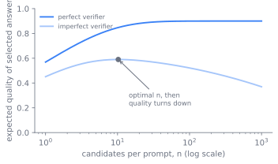

flowchart TB
P[Prompt] --> PAR["Parallel: k independent samples"]
P --> SEQ["Sequential: one growing chain"]
PAR --> COV[Coverage rises with k]
COV --> SEL{Selector}
SEL -->|verifier| ACC[Coverage becomes accuracy]
SEL -->|majority vote or reward model| PLAT[Plateaus past hundreds of samples]
SEQ --> REV[Revise or extend in place]
REV --> BUD[Budget forcing controls length]
15 The Inference-Time Scaling Paradigm
Training in sec-training-to-reason spends compute once to bake reasoning into the weights. This chapter is about the other lever: spending more compute at inference, after the weights are frozen, to make a fixed model answer harder questions. By the end a reader can explain why repeated sampling buys coverage but not an answer, why sequential revision and parallel search are different shapes of test-time compute with different ideal regimes, how compute-optimal allocation routes a budget by prompt difficulty, and why the whole curve bends back down when the thing that picks the answer is imperfect.
15.1 The one knob left after training
A trained model has one knob left at inference: how much compute to spend per prompt. The cheapest answer is one greedy decode. The question this chapter answers is what you get for spending more, a thousand samples instead of one, or a long deliberate chain instead of a short one, and whether that spend is ever a better deal than training a larger model in the first place.
The reason the question is live is that the two spends are fungible. A larger model costs more to train and more per token forever. Test-time compute costs nothing at training and is paid only on the prompts that need it, which is most of the value on a long tail of hard prompts and none of it on the easy majority. If a small model plus extra inference can match a large model on the hard prompts, the serving economics of sec-serving-problem change, because you move cost from a fixed asset you pay for on every request to a variable you spend only when a prompt earns it.
15.2 Two shapes of test-time compute
Test-time compute comes in two shapes, and the distinction organizes the whole chapter. Parallel scaling draws many independent samples and combines them. Sequential scaling spends the compute in one growing chain, where each step conditions on the last, revising or extending a single line of thought. Snell et al. frame these as revising the proposal distribution sequentially versus searching against a verifier in parallel, and the central empirical claim is that neither dominates: the better shape depends on the prompt (Snell et al. 2024).
Sequential scaling spends the budget the second way. Instead of \(k\) independent shots, the model keeps thinking in one trajectory, and the compute buys length and revision rather than breadth. The reasoning models of sec-training-to-reason already do this natively: a long chain of thought is sequential test-time compute that the RL of that chapter taught the model to produce. s1 shows the lever in its barest form with budget forcing, a decoding-time intervention that controls how long the model thinks by suppressing the end-of-thinking token and appending the word “Wait” to push the model to continue, or by forcing termination to cap the spend (Muennighoff et al. 2025). Lengthening the chain this way lets the model catch and fix its own errors, and accuracy rises with the forced budget. Sequential and parallel are composable: you can draw several long chains and select among them, and Snell et al. study exactly this two-dimensional budget (Snell et al. 2024). Figure fig-inference-time-scaling-shapes lays out the two shapes and where the selector decides whether coverage becomes accuracy.
15.3 Coverage is not accuracy
The parallel story starts with the simplest possible method. Draw \(k\) samples and ask what fraction of problems are solved by at least one of them. Brown et al. call this coverage, and it is the ceiling on what any selection rule could extract from the samples (Brown et al. 2024). Coverage rises smoothly with \(k\) across four orders of magnitude, well modeled as an exponentiated power law, which is the inference-time analogue of the training scaling laws in sec-scaling-laws. The key word is coverage, not accuracy. A correct sample exists in the set; that is not the same as knowing which one it is.
That gap is the design problem of parallel scaling. To turn coverage into an answer you need a selector, and the selector is where the difficulty lives. When the task has an automatic verifier, the unit tests and answer checkers and proof checkers of sec-training-to-reason, selection is free: run the verifier on each sample and keep one that passes. Coverage converts directly into accuracy, which is why repeated sampling pays most in code and formal math. When there is no automatic verifier, you fall back to a heuristic selector, majority vote over the answers or a learned reward model scoring each sample. These work to a point and then plateau: Brown et al. report that majority vote and reward models stop scaling past a few hundred samples even as coverage keeps climbing, because the selector cannot tell the rare right answer from the many confident wrong ones (Brown et al. 2024). The whole chapter turns on this one gap between a correct answer existing and a system finding it. Figure fig-15-inference-time-scaling-1 makes the gap visible: coverage climbs smoothly with \(k\), a verifier realizes almost all of it, and a heuristic selector tracks coverage early and then plateaus far below it.

15.4 From tricks to a compute axis
The methods are older than the paradigm. Self-consistency, sampling several chains and taking a majority vote over final answers, is parallel scaling with a majority selector and predates the reasoning-model era (Wang et al. 2022). Best-of-\(n\) against a reward model is parallel scaling with a learned selector. Process reward models, trained in “Let’s Verify Step by Step” and used as the dense verifier in sec-training-to-reason, are what makes verifier-guided search over partial chains work, scoring steps rather than only final answers so a search can prune early (Lightman et al. 2023). What changed in 2024 was the framing: these stopped being tricks and became a compute axis with its own scaling laws.
Brown et al. established the parallel law: coverage as a smooth, predictable function of sample count, and the sharp dependence of its payoff on whether a verifier exists (Brown et al. 2024). Snell et al. asked the allocation question. Given a fixed test-time budget, how should you split it, more parallel samples, more sequential revision, a deeper verifier search (Snell et al. 2024).
15.5 Routing the budget by difficulty
Snell et al. showed the answer depends on prompt difficulty. Easy prompts benefit from sequential refinement of an already-good first guess; hard prompts benefit from broader parallel search. Routing the budget by difficulty, their compute-optimal strategy, beat a best-of-\(n\) baseline by more than four times in efficiency, and on prompts where a small model already had a foothold, a FLOPs-matched small model with extra test-time compute outperformed a model roughly fourteen times larger (Snell et al. 2024). That is the constraint arrow of the chapter made quantitative: inference compute substituting for parameters. Figure fig-inference-time-scaling-allocation traces how the budget is routed by difficulty.
flowchart TB
B[Fixed test-time budget] --> D{Estimated prompt difficulty}
D -->|easy| SEQ[Sequential refinement of a good first guess]
D -->|hard| PAR[Broad parallel search]
D -->|beyond reach| ZERO["Zero coverage: no spend helps"]
SEQ --> WIN[Compute-optimal beats best-of-n by over 4x]
PAR --> WIN
WIN --> SUB[Small model plus compute matches a 14x larger model]
ZERO --> UP[Only a stronger model or better training helps]
15.6 Less data, more inference
The s1 and LIMO results sharpened a different edge. s1 reached strong competition-math performance by supervised fine-tuning on only about a thousand carefully chosen reasoning traces and then scaling at test time with budget forcing (Muennighoff et al. 2025). LIMO made the less-is-more claim explicit with a few hundred examples, arguing that when a base model already encodes the knowledge from pre-training, a small set of high-quality demonstrations is enough to elicit the reasoning, and the heavy lifting moves to inference (Ye et al. 2025). Both point the same way: the capacity may already be latent in the weights, and test-time compute is how you call it out. This connects to the contested question in sec-training-to-reason about whether RL teaches new reasoning or elicits what is already there, seen now from the inference side.
ImportantWhat’s contested
How far test-time compute keeps paying off is bounded by the quality of the thing that selects or guides, and that bound is not a footnote. With a perfect verifier, more samples never hurt: coverage rises monotonically and selection is free, so the curve only bends toward the ceiling. With an imperfect verifier or a heuristic selector, the curve can stop improving or turn down. More samples give the selector more confident-but-wrong candidates to be fooled by, and an optimization-against-the-selector effect appears that is the inference-time twin of the reward hacking in sec-rlhf: best-of-\(n\) against a flawed reward model can select the sample that games the model rather than solves the problem, and past some \(n\) the expected quality falls. Brown et al. see majority vote and reward-model selection plateau past hundreds of samples while coverage keeps climbing, which is the same gap from the other side: the answer is in the set and the selector cannot find it (Brown et al. 2024). So the honest claim is conditional. Test-time compute scales cleanly where verification is cheap and sound, and the cleaner the verifier, the longer the curve pays. Where it is not, the scaling is bounded by selector quality, and more compute is not free improvement. Figure fig-15-inference-time-scaling-2 shows both regimes: a perfect verifier rises monotonically, while an imperfect one peaks and then turns down as larger \(n\) feeds the selector more confident-but-wrong candidates.

15.7 The balances and their knees
The paradigm is a set of balances, each with a knee.
- Parallel versus sequential. Parallel sampling is embarrassingly concurrent and latency-friendly, you can decode \(k\) samples at once, but it needs a selector and wastes compute on redundant near-duplicates. Sequential revision uses compute more efficiently on prompts where a first guess is close, but it is inherently serial and pays full latency. Snell et al. show the right mix is difficulty-dependent, not a constant (Snell et al. 2024).
- Coverage versus selection. More samples always raise coverage, but the realized accuracy is capped by the selector. With a verifier the cap is the coverage ceiling; without one the cap is wherever majority vote or the reward model plateaus. Spending past that point buys nothing.
- Test-time compute versus model size. Extra inference can substitute for parameters on the hard tail, shifting cost from a fixed training-and-serving asset to a per-prompt variable. But the substitution has a regime: it works when the small model already has nonzero coverage, and it fails on prompts the small model never solves no matter how many tries, where only a stronger model or better training helps.
- Data efficiency versus compute. s1 and LIMO trade training data for test-time compute, eliciting latent capability with a tiny SFT set plus inference scaling (Muennighoff et al. 2025; Ye et al. 2025). The bet holds only when the base model already encodes the domain; on genuinely new capability there is nothing latent to elicit.
- Latency and cost versus accuracy. Every method here multiplies the per-prompt compute and, for sequential methods, the latency. The product decision is which prompts deserve the spend, which is exactly what compute-optimal allocation formalizes.
TipConstraint arrow
This chapter reaches down to sec-serving-problem and back up to sec-scaling-laws. Test-time scaling only makes sense if the serving layer can deliver many samples or long chains cheaply, so the batching, key-value cache, and decoding speed of sec-memory-scheduling and sec-faster-decoding set the real price of a sample, and that price decides where compute-optimal allocation stops. And it closes the loop opened in sec-scaling-laws: the over-training argument there said training compute substitutes for serving cost, while this chapter says inference compute substitutes for parameters. Together they say the model size is jointly set by training budget, serving cost, and how much reasoning you intend to buy at inference, not by any one of them alone.
15.8 Building it
The operational core is small. A parallel scaler is a sampling loop plus a selector: draw \(k\) completions at a temperature high enough for diversity, then either run the verifier and keep a passing one, or take a majority vote, or score with a reward model and take the best. The verifier path is the one that scales, so the engineering effort goes where sec-training-to-reason put it, into making the checker sound and broad. A sequential scaler is a controlled decode: detect when the model tries to stop and decide whether to let it, the budget-forcing intervention, suppressing the stop token and injecting a continuation cue to extend, or forcing a final answer to cap.
# Parallel scaling: coverage is free, selection is the hard part.
def best_of_k(prompt, k, select):
samples = [model.sample(prompt, temperature=0.8) for _ in range(k)]
return select(samples) # verifier > reward model > majority voteThe failure modes follow from the design. Selecting with an imperfect verifier is the central one: more samples feed a flawed selector more chances to pick a confident wrong answer, the inference-time reward hacking named in the contested box, so the curve flattens or dips and more compute is wasted compute. Coverage without a selector is the related trap: the right answer is provably in the set and the system still returns a wrong one, which looks like a model failure but is a selection failure. Sequential over-thinking is the third: budget forcing past the useful point can make a model second-guess a correct answer into a wrong one, so the forced budget itself has a knee. And the substitution fails silently on prompts of zero coverage, where no amount of test-time compute helps because no sample is ever correct, and the only fix is upstream in the model.
The capability, efficiency, and trust lens closes the chapter. Test-time scaling is a capability lever that turns a frozen model into a stronger one on the hard tail without retraining. It is an efficiency lever that moves cost off the fixed asset onto the prompts that earn it, governed by the serving prices above. And it is a trust hazard, because its entire payoff rides on the selector, and a selector you do not trust converts more compute into more confidently wrong answers. The verifier quality that bounded the training loop in sec-training-to-reason bounds the inference loop here too: the same ground truth that makes RL safe is what makes test-time scaling pay.
15.9 Further reading
- Brown et al., “Large Language Monkeys: Scaling Inference Compute with Repeated Sampling,” 2024. arXiv:2407.21787
- Snell et al., “Scaling LLM Test-Time Compute Optimally can be More Effective than Scaling Model Parameters,” 2024. arXiv:2408.03314
- Muennighoff et al., “s1: Simple test-time scaling,” 2025. arXiv:2501.19393
- Ye et al., “LIMO: Less is More for Reasoning,” 2025. arXiv:2502.03387
- Wang et al., “Self-Consistency Improves Chain of Thought Reasoning in Language Models,” 2022. arXiv:2203.11171
- Lightman et al., “Let’s Verify Step by Step” (process reward models for verifier-guided search), 2023. arXiv:2305.20050
Brown, Bradley, Jordan Juravsky, Ryan Ehrlich, et al. 2024. “Large Language Monkeys: Scaling Inference Compute with Repeated Sampling.” arXiv Preprint arXiv:2407.21787. https://arxiv.org/abs/2407.21787.
Lightman, Hunter, Vineet Kosaraju, Yura Burda, et al. 2023. “Let’s Verify Step by Step.” arXiv Preprint arXiv:2305.20050. https://arxiv.org/abs/2305.20050.
Muennighoff, Niklas, Zitong Yang, Weijia Shi, et al. 2025. “S1: Simple Test-Time Scaling.” arXiv Preprint arXiv:2501.19393. https://arxiv.org/abs/2501.19393.
Snell, Charlie, Jaehoon Lee, Kelvin Xu, and Aviral Kumar. 2024. “Scaling LLM Test-Time Compute Optimally Can Be More Effective Than Scaling Model Parameters.” arXiv Preprint arXiv:2408.03314. https://arxiv.org/abs/2408.03314.
Wang, Xuezhi, Jason Wei, Dale Schuurmans, et al. 2022. Self-Consistency Improves Chain of Thought Reasoning in Language Models. https://arxiv.org/abs/2203.11171.
Ye, Yixin, Zhen Huang, Yang Xiao, Ethan Chern, Shijie Xia, and Pengfei Liu. 2025. “LIMO: Less Is More for Reasoning.” arXiv Preprint arXiv:2502.03387. https://arxiv.org/abs/2502.03387.